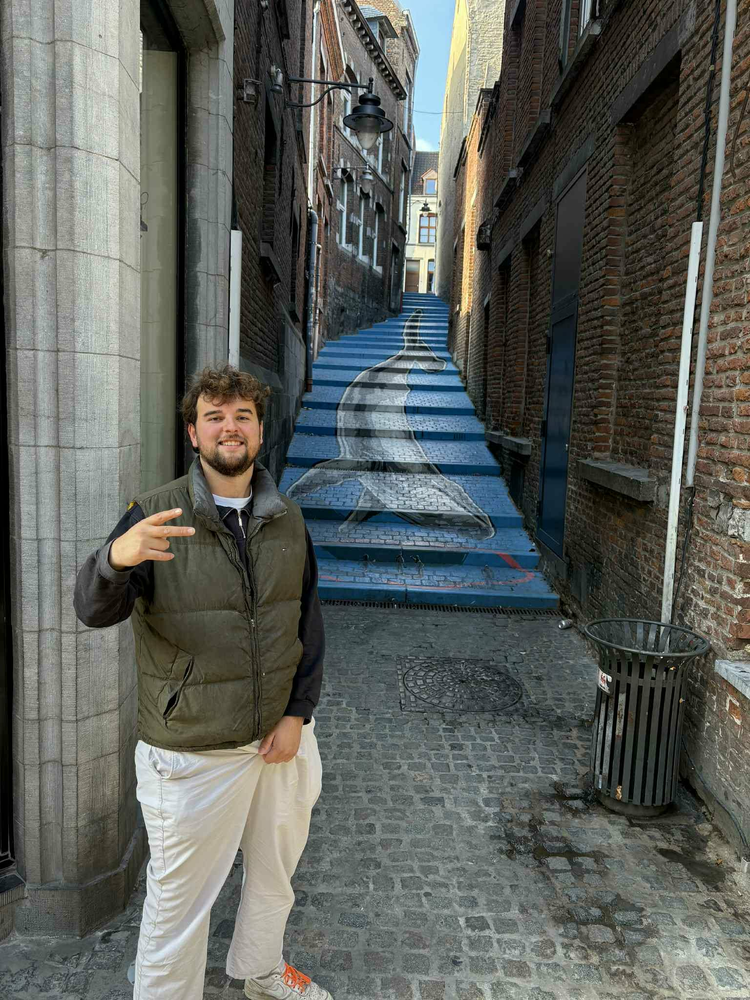
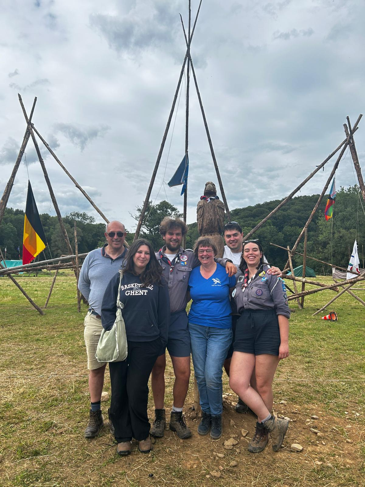
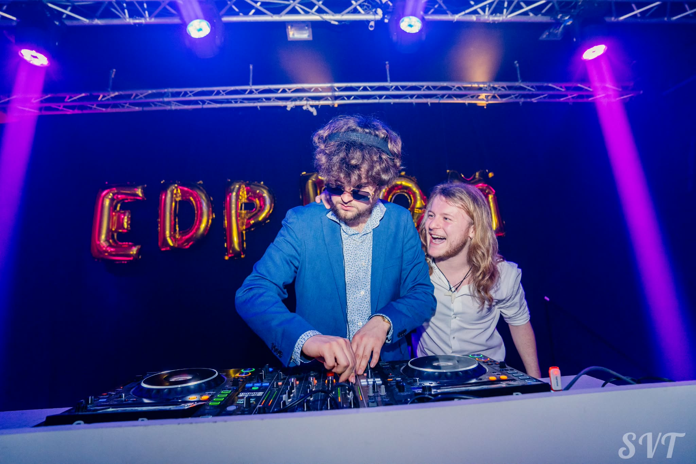

Wie is Jens?
Ik ben een enthousiaste en gedreven student AI & Data Engineering aan HOGENT. Binnen de scouts sta ik bekend onder mijn totemnaam 'ongedwongen bultrug', een naam die perfect weerspiegelt hoe ik in het leven sta.
Net als mijn totem ben ik zeer sociaal, nieuwsgierig en communicatief ingesteld. Ik ben een actieve teamspeler die ervan houdt om samen naar een doel te streven. Daarnaast ben ik een snelle leerling die nieuwe technologieën vlot onder de knie krijgt en deze direct weet om te zetten in praktische, innovatieve oplossingen.

Een Hart voor Scouting
Een van mijn grootste passies is de scouts. Ik ben gedurende 5 jaar leiding geweest bij 156ste FOS De Havik. Met meer dan 300 ingeschreven leden is dit een van de grootste eenheden van Vlaanderen. Gezien deze omvang vergt de werking een serieuze organisatie, waar ik naast het leiding geven ook actief bijdroeg in de bredere structuur.
Deze ervaring heeft me gevormd op sociaal en professioneel vlak. Het heeft me geholpen om sterke communicatieve vaardigheden te ontwikkelen en leerde me hoe ik complexe projecten moet plannen en coördineren met anderen. Bovenal heeft het me een groot verantwoordelijkheidsgevoel bijgebracht.

Muziek & Creativiteit: DJens
Naast data en scouting is muziek mijn grote creatieve uitlaatklep. Onder mijn alias DJens ben ik jarenlang actief geweest als DJ op diverse evenementen. Het draaien voor een publiek heeft me vaardigheden opgeleverd die ook in de IT-sector van pas komen.
Zo leerde ik via een sterke publieksanalyse snel inspelen op de sfeer en behoeften van een groep. Daarnaast ontwikkelde ik een groot improvisatievermogen om kalm te blijven en oplossingen te vinden wanneer dingen technisch of organisatorisch anders lopen dan gepland. Deze passie zorgde ook voor een diepgaande technische expertise wat betreft audio-apparatuur en signaalverwerking.